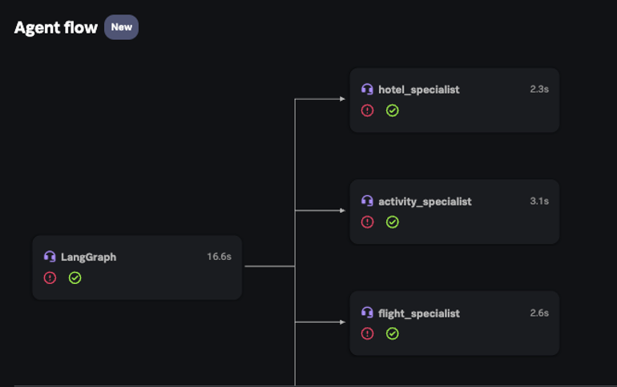
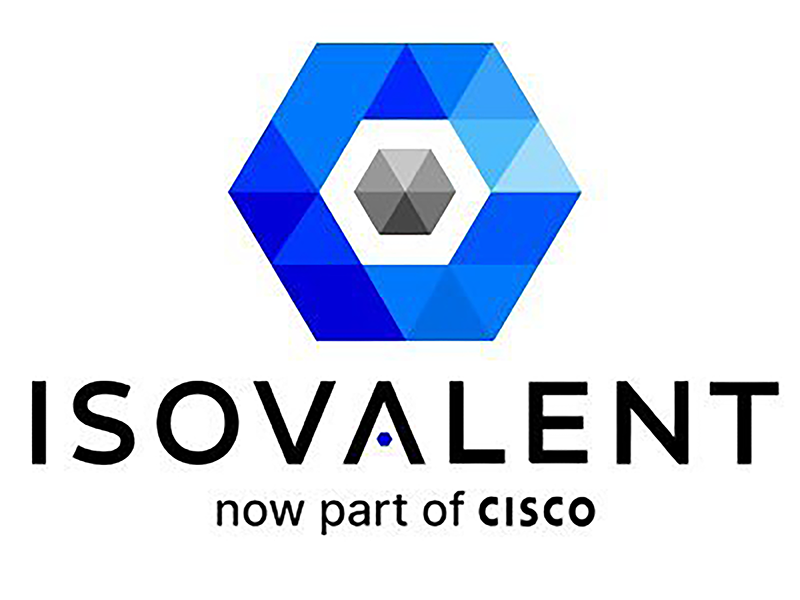

Monitoring Agentic AI Applications
OpenTelemetry를 활용하여 LLM 및 AI 애플리케이션 스택의 성능, 품질, 보안 및 비용을 Splunk Observability Cloud로 모니터링 해 보는 워크샵입니다.

Isovalent Splunk O11y Cloud Integration
Cilium 기반 eBPF 네트워크 관측성과 Splunk O11y Cloud를 연동하는 워크샵입니다.

Advanced Collector Configuration
OpenTelemetry Collector의 Gateway, Filelog, 데이터 가공 등 고급 설정을 다루는 워크샵입니다.
Real User Monitoring
Splunk RUM을 활용해 브라우저 사용자 경험을 수집하고 분석하는 워크샵입니다.
Splunk Rookies Workshop for Observability
Kubernetes 환경에서 Zero-code Instrumentation으로 인프라, APM, Log를 수집하는 입문 워크샵입니다.